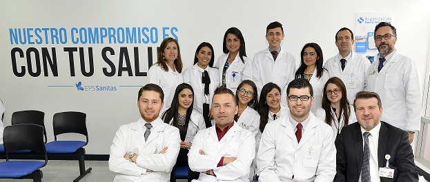

Pertenecemos al grupo Keralty. Creada en 1991 como respuesta a la reforma de la Seguridad Social en Colombia. Ofrecemos servicios de atención en salud y prestaciones a nuestros afiliados dentro del Plan de Beneficios

Misión
Somos gestores del riesgo en salud de los colombianos basados en la atención primaria como el eje fundamental y articulador de las atenciones en salud, con enfoque preventivo, de forma amable, confiable, eficiente y rentable.
Visión
En el 2020 Clinica Ancora será un referente nacional en aseguramiento en salud; reconocida por sus innovadores modelos de atención y por la utilización de la tecnología que permita una gestión priorizada e individualizada del riesgo en salud; con altos niveles de satisfacción generados por la percepción de cuidado y gestión de riesgo y acentuados por la facilidad para resolver las necesidades de salud de sus afiliados.